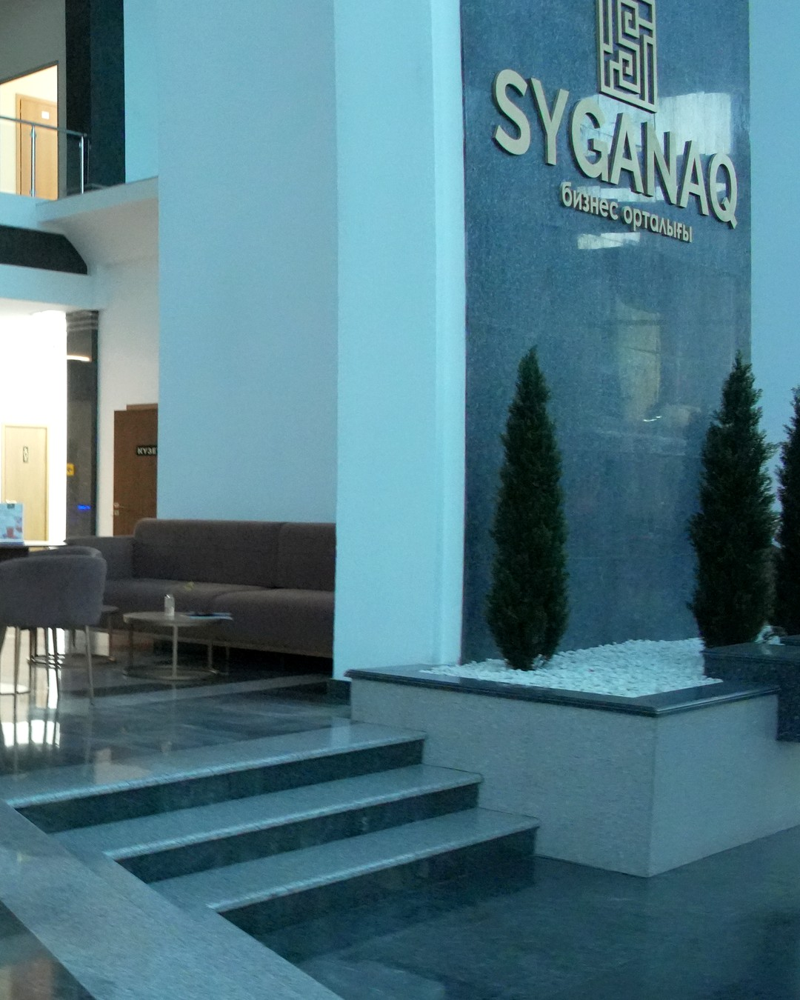

Base camp
1992
Agreement signed in Moscow
EU, Japan, Russia and the US found ISTC.
Peaceful science, shared by 100+ countries.
Source: ISTC Annual Report 2024.
Our story
ISTC gave them peaceful work. Here is the route.
EU, Japan, Russia and the US found ISTC.
Georgia, Armenia, Kazakhstan, Kyrgyz Republic.
Norway, Republic of Korea, Tajikistan.
Membership opens to any country.
Guests from 25 countries in Astana.
Board decision: December 2026.
Our mission in 13 words
“Creating peaceful multilateral S&T collaboration for a safer, more secure, and sustainable world.
“To be the partner of choice in creating, facilitating, and expediting impactful world-class, peaceful multilateral S&T collaboration aimed at making the world safer, more secure, and more sustainable.”
Civilian science only.
Ten Parties decide together.
Lower CBRN risks, stronger economies.
How ISTC works · scroll
Scientists and engineers whose skills could build weapons.
Their institute sends ISTC a research proposal.
Members review it and link the team to partners abroad.
Grants, equipment, travel and training go straight to the team.
Better health, cleaner energy, safer water, stronger security.
What ISTC does
Projects first. The rest helps teams succeed.
11 areas of interest
Chosen by ISTC members. They guide project selection.
Source: istc.int — Areas of Interest.
Interactive · 3 questions
Answer three questions. We'll match you with a path in and similar projects from the ISTC database.
Who we work with
Grants, equipment and co-authors abroad.
A strong team and clear rights to results.
What partners getCBRN safety, seismic monitoring, export control.
See programmesTwo ways in
Bonus
Bonus
Sources: istc.int — Advantages of working with ISTC, How to become a partner, FAQ (Call 2026).
How decisions are made
Set the direction
Approves by consensus
Checks the science
Delivers projects
Chair of the Board: Dr. Ronald F. Lehman II · SAC Chair: Kenya Suyama · Executive Director: Karina Anguelieva. Source: ISTC Statute (2019), istc.int.
Where we are

70 Syganaq street, 12th floor · istcinfo@istc.int
Collaborators named on ISTC project pages. Offices: istc.int/contact-info.
Questions we hear
No. Since 2015 any country can join. Recent programmes run in Africa, the Middle East and Southeast Asia.
The EU, Japan and the US governments; Norway also contributes. Partners fund individual projects.
In regular projects, the scientist. In partner projects, a three-way agreement decides.
The 2026 Call is closed and under review; the Board decides in December. Watch istc.int for the next call.
Yes — as a Partner, or as an approved subcontractor in a call.
No. ISTC funds research projects that can include equipment, but not equipment alone.
460+ projects in the public database
TB data portals. 88 seismic stations. See what teams built.